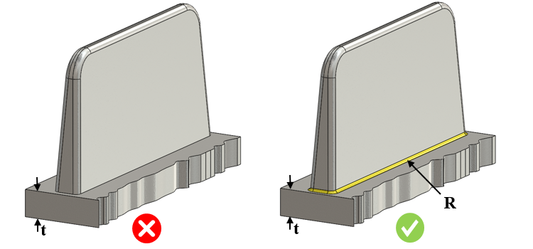

リブ根元部におけるフィレット半径の最小値は、指定された値より大きくなければなりません。
リブは、ダイカスト部品の剛性を高めたり、強度を付加したりするために使用されます。リブ根元部に鋭角な角部があると、その部分に応力集中が生じ、部品の割れや破損につながります。応力を低減するために、リブの根元部には所定の最小半径を持つフィレットを設ける必要があります。ただし、半径が大きすぎると、肉厚部が形成されてしまうため注意が必要です。
リブ根元部のフィレット半径は、部品の公称肉厚の 0.25 ～ 0.5 倍の範囲とすることが推奨されます。
ルール UI では、材料の一覧が 材料マッピング から読み込まれ、ユーザーは材料およびそれらの値を構成することができます。
材料とその値を構成した後、ユーザーは Ctrl+M コマンドを使用して、ルール UI 上で材料グループおよびグレードとともに、構成済み材料の一覧をフィルタリングして表示できます。同じキー（Ctrl+M）を使用して、フィルタをリセットできます。

R = リブ根元部の半径
t = 公称肉厚